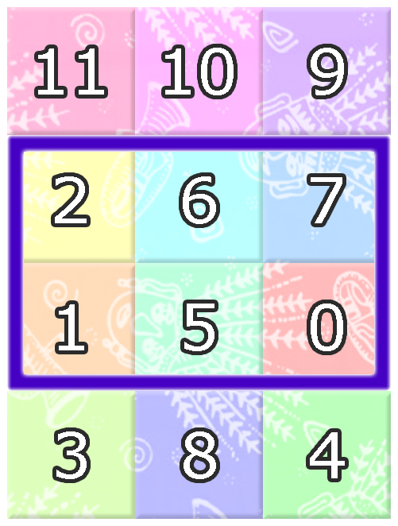
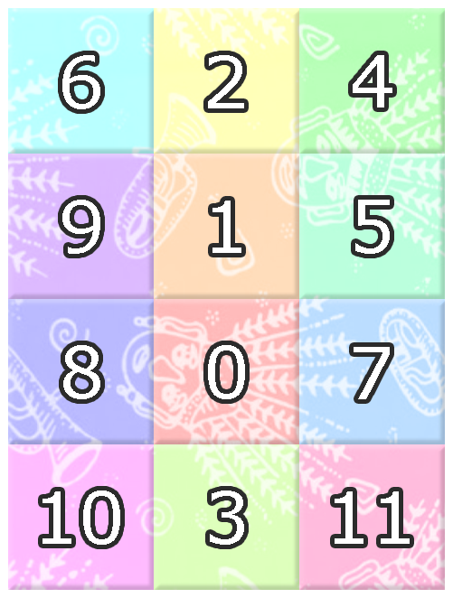

Pak Dengklek is deeply interested in batik, a traditional Indonesian cloth. One day, Pak Dengklek discovered a magical batik cloth from Betawi.
The batik cloth has a rectangular shape divided into squares with $N$ rows and $M$ columns. The rows are numbered from $1$ to $N$ from top to bottom. The columns are numbered from $1$ to $M$ from left to right. Let $(r, c)$ denote the square at row $r$ and column $c$.
There are $N \times M$ distinct colors on the cloth. These colors are numbered from $0$ to $N \times M - 1$. Initially, square $(i, j)$ has color $A_{i,j}$ for each $1 \leq i \leq N$; $1 \leq j \leq M$ and it is known that no two squares share the same color.
Since the batik cloth is magical, Pak Dengklek can perform several modifications to the colors on this cloth. There will be $Q$ events. Each event is one of the following three types:
1 R1 C1 R2 C2 —
Squares $(R_1, C_1)$ and $(R_2, C_2)$ swap colors.
2 W —
Each square changes color from color $x$ to color $(x + W) \bmod (N \times M)$.
Note: $p \bmod q$ denotes the remainder of dividing $p$ with $q$.
3 R1 C1 R2 C2 —
Pak Dengklek asks: what is the color with the smallest number that does not appear on all squares $(r, c)$ that satisfy $R_1 \leq r \leq R_2$; $C_1 \leq c \leq C_2$?
Help Pak Dengklek answer all his questions!
The input is given in the following format:
N M A1,1 A1,2 … A1,M A2,1 A2,2 … A2,M ⋮ ⋱ ⋮ AN,1 AN,2 … AN,M Q event1 event2 ⋮ eventQ
For each event of type 3, output a single line containing an integer representing the smallest color number that does not appear on all squares $(r, c)$ satisfying $R_1 \leq r \leq R_2$; $C_1 \leq c \leq C_2$.
Specifically, if all colors appear, output -1.
4 3 11 10 9 2 6 7 1 5 0 3 8 4 6 3 2 1 3 3 1 2 3 1 2 2 7 3 1 2 4 2 3 1 1 4 3 3 4 1 4 1
3 4 -1 0
Initially, the batik cloth is shaped as follows:
The $1$-st event queries the following cloth section:

After the $2$-nd event, the batik cloth changes to as follows:

After the $3$-rd event, the batik cloth changes to as follows:

The $4$-th, $5$-th, and $6$-th events query the following cloth sections:

-1.